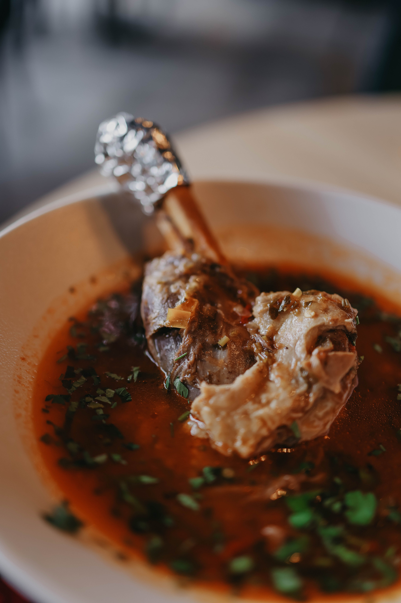

Lamb Shhh Secret Shanks
Back to main

Slow cooked lamb shanks with a deep rich flavor and a hint of spice
Ingredients: Serves 4
- 4 lamb shanks, trimmed
- 8 eschallots, peeled
- 1 cup red wine
- 2 cups chicken stock
- ¼ cup balsamic vinegar
- 2 long sprigs rosemary
- Olive oil mash and broccolini, to serve
Method
- Preheat the oven to 170°C. Place a heavy based casserole over a moderately high heat. Rub some olive oil over the lamb and season with salt and pepper. Sear for 8 minutes or until browned all over. Remove the shanks and set aside.
- Place the shallots in the pan and cook for 4 minutes or until coloured. Add the wine, stock, vinegar and rosemary along with the lamb. Bring up to the boil, cover and place in the oven for 2 hours or until very tender. Remove the lid and cook for a further 30 minutes. Turn them over once or twice if they are colouring too much.
- Use a spoon to skim off any fat that has risen to the surface and reduce the sauce over a high heat if necessary. Serve with olive oil mash and steamed brocollini.
Tips
- The lamb shanks can be cook the day before and gently heated to serve.
- You can substitute the mashed potato with some soft polenta.
Back to main